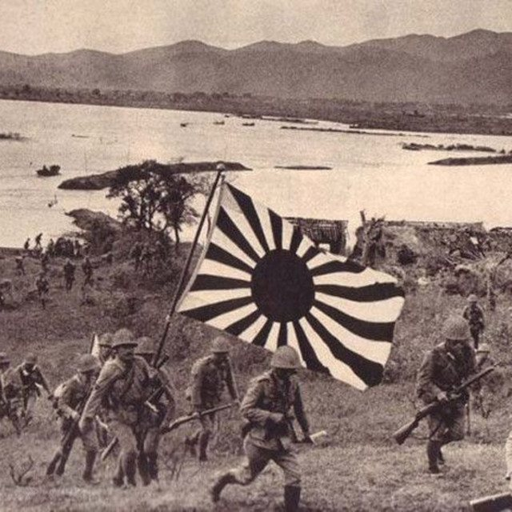

The Eclectic Polymath Podcast · Archive
#170 Hong Kong Under Japan: The Three Years and Eight Months That Changed the City

About this episode
On Christmas Day 1941, Hong Kong surrendered to Japan after just 18 days of fighting. What followed became known locally simply as the “three years and eight months”—a period of military occupation that profoundly disrupted everyday life in the colony.
This episode traces Hong Kong from the final years of British colonial rule before the invasion through Japanese occupation, food shortages, currency disruption, population displacement, and resistance. By 1945, Hong Kong’s population had fallen from more than 1.6 million before the occupation to roughly 600,000, while guerrilla groups including the Hong Kong Independent Battalion of the Dongjiang Column operated against Japanese forces.
Key points
- On Christmas Day 1941, Hong Kong surrendered to Japan after just 18 days of fighting.
- This episode traces Hong Kong from the final years of British colonial rule before the invasion through Japanese occupation, food shortages, currency disruption, population displacement, and resistance.
- By 1945, Hong Kong’s population had fallen from more than 1.6 million before the occupation to roughly 600,000, while guerrilla groups including the Hong Kong Independent Battalion of the Dongjiang Column operated against Japanese forces.
- We explore the collapse of assumptions about British security, the competing resistance networks that formed under wartime rule, and how the experience became part of Hong Kong’s complicated historical memory between Britain, China, and Japan.
More like this
#101 Anthony Bourdain: Authenticity, Travel, and the Reinvention of Food TelevisionAugust 1, 202645:56 #217 A Different World: The Sitcom That Refused to EndOctober 16, 202651:08
#217 A Different World: The Sitcom That Refused to EndOctober 16, 202651:08 #197 Spirit Halloween: The Business of the Pop-UpOctober 8, 202648:16
#197 Spirit Halloween: The Business of the Pop-UpOctober 8, 202648:16 #180 Hello Kitty: The Strange Power of CutenessSeptember 27, 20261:07:30
#180 Hello Kitty: The Strange Power of CutenessSeptember 27, 20261:07:30
#217 A Different World: The Sitcom That Refused to EndOctober 16, 202651:08#197 Spirit Halloween: The Business of the Pop-UpOctober 8, 202648:16#180 Hello Kitty: The Strange Power of CutenessSeptember 27, 20261:07:30